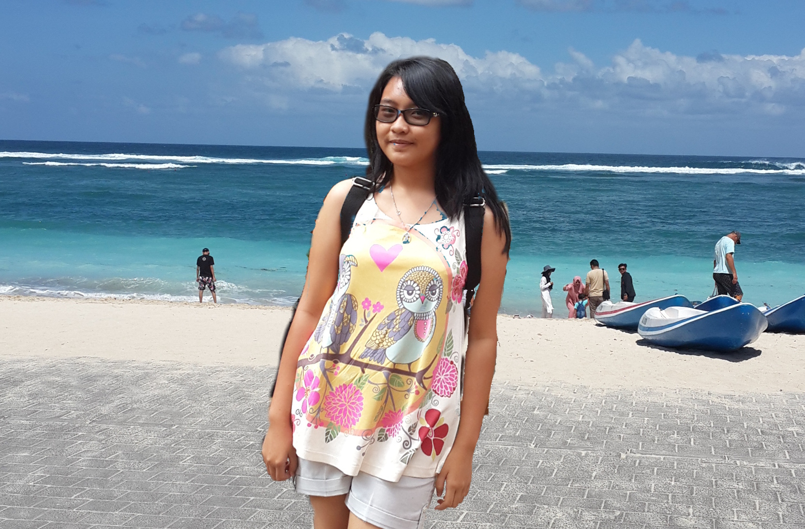

ABOUT ME
Background
Hai, welcome to story of my life. Website yang dibuat karena keterpaksaan tugas seorang analis kimia yang lelah dengan kimia dan merangkap menjadi seorang programmer dadakan.
Theresia Andrian
">
Background
Hai, welcome to story of my life. Website yang dibuat karena keterpaksaan tugas seorang analis kimia yang lelah dengan kimia dan merangkap menjadi seorang programmer dadakan.
Theresia Andrian
Ini adalah beberapa hobiku.
Travelling Menyanyi
I'd love your feedback!